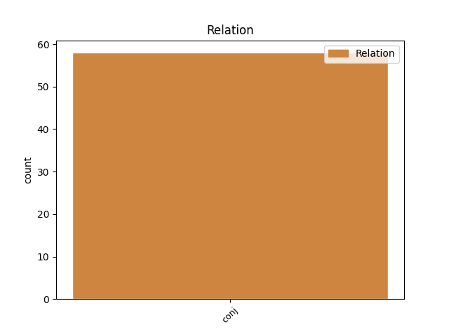
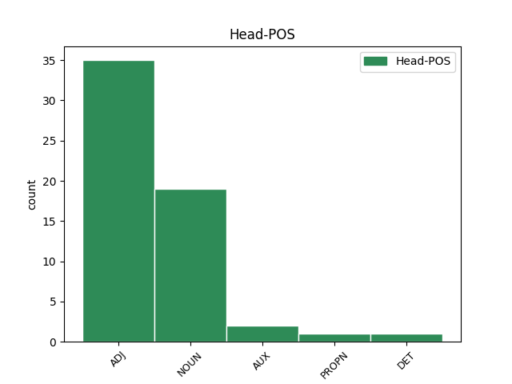
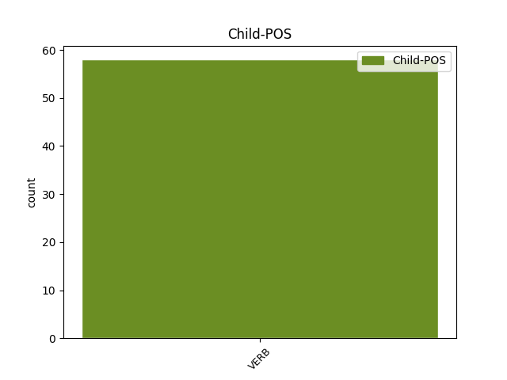

Distribution of features within this leaf



Agreement Rules sorted by frequency.
- When the dependent token is the conjunct(conj) of the head token, and the head token is ADJ and the dependent token is VERB.
1 ihminen _ _ _ _ 0 _ _ _
2 on _ _ _ _ 0 _ _ _
3 ahne ahne ADJ A,Sg,Nom Case=Nom|Number=Sing 0 _ _ _
4 ja _ _ _ _ 0 _ _ _
5 kanssaihmisistä _ _ _ _ 0 _ _ _
6 piittaamaton piitata VERB V,PcpNeg,Sg,Nom Case=Nom|Number=Sing|PartForm=Neg|VerbForm=Part 3 conj _ _
7 . _ _ _ _ 0 _ _ _
1 Hänet _ _ _ _ 0 _ _ _
2 sidottakoon _ _ _ _ 0 _ _ _
3 vartiovuoren _ _ _ _ 0 _ _ _
4 huipulle _ _ _ _ 0 _ _ _
5 ja _ _ _ _ 0 _ _ _
6 jätettäköön _ _ _ _ 0 _ _ _
7 sinne _ _ _ _ 0 _ _ _
8 ruoatta ruoka NOUN N,Sg,Abe Case=Abe|Number=Sing 0 _ _ _
9 ja _ _ _ _ 0 _ _ _
10 juomatta juoda VERB V,Act,InfMa,Abe Case=Abe|InfForm=3|VerbForm=Inf|Voice=Act 8 conj _ _
11 , _ _ _ _ 0 _ _ _
12 kunnes _ _ _ _ 0 _ _ _
13 kuolee _ _ _ _ 0 _ _ _
14 . _ _ _ _ 0 _ _ _
1 On _ _ _ _ 0 _ _ _
2 helppoa _ _ _ _ 0 _ _ _
3 olla olla AUX V,Act,InfA,Lat Case=Lat|InfForm=1|VerbForm=Inf|Voice=Act 0 _ _ _
4 negatiivinen _ _ _ _ 0 _ _ _
5 ja _ _ _ _ 0 _ _ _
6 kirjoittaa kirjoittaa VERB V,Act,InfA,Lat Case=Lat|InfForm=1|VerbForm=Inf|Voice=Act 3 conj _ Alt=4_conj
7 lauluja _ _ _ _ 0 _ _ _
8 asioista _ _ _ _ 0 _ _ _
9 , _ _ _ _ 0 _ _ _
10 jotka _ _ _ _ 0 _ _ _
11 ottavat _ _ _ _ 0 _ _ _
12 päähän _ _ _ _ 0 _ _ _
13 . _ _ _ _ 0 _ _ _
1 Pashko pashko PROPN N,Prop,Sg,Nom Case=Nom|Number=Sing 0 _ _ _
2 ja _ _ _ _ 0 _ _ _
3 muut _ _ _ _ 0 _ _ _
4 kenkää _ _ _ _ 0 _ _ _
5 saaneet saada VERB V,Act,PcpNut,Pl,Nom Case=Nom|Number=Plur|PartForm=Past|VerbForm=Part|Voice=Act 1 conj _ _
6 perustivat _ _ _ _ 0 _ _ _
7 uuden _ _ _ _ 0 _ _ _
8 puolueen _ _ _ _ 0 _ _ _
9 , _ _ _ _ 0 _ _ _
10 Demokraattisen _ _ _ _ 0 _ _ _
11 liiton _ _ _ _ 0 _ _ _
12 . _ _ _ _ 0 _ _ _
1 Toinen toinen DET Pron,Qnt,Sg,Nom Case=Nom|Number=Sing|PronType=Ind 0 _ _ _
2 , _ _ _ _ 0 _ _ _
3 ammattiliittojen _ _ _ _ 0 _ _ _
4 järjestämä järjestää VERB V,PcpAg,Sg,Nom Case=Nom|Number=Sing|PartForm=Agt|VerbForm=Part 1 conj _ _
5 marssi _ _ _ _ 0 _ _ _
6 muistutti _ _ _ _ 0 _ _ _
7 tanssityttöineen _ _ _ _ 0 _ _ _
8 ja _ _ _ _ 0 _ _ _
9 sinisine _ _ _ _ 0 _ _ _
10 lippuineen _ _ _ _ 0 _ _ _
11 enemmän _ _ _ _ 0 _ _ _
12 kevätjuhlaa _ _ _ _ 0 _ _ _
13 kuin _ _ _ _ 0 _ _ _
14 poliittista _ _ _ _ 0 _ _ _
15 mielenosoitusta _ _ _ _ 0 _ _ _
16 . _ _ _ _ 0 _ _ _
Disagree Examples:
1 Siinä _ _ _ _ 0 _ _ _
2 takapuoli takapuoli NOUN N,Sg,Nom Case=Nom|Number=Sing 0 _ _ _
3 kylmänä _ _ _ _ 0 _ _ _
4 tai _ _ _ _ 0 _ _ _
5 kusiaisten _ _ _ _ 0 _ _ _
6 syötävänä syödä VERB V,Pass,PcpVa,Sg,Ess Case=Ess|Number=Sing|PartForm=Pres|VerbForm=Part|Voice=Pass 2 conj _ _
7 istuessa _ _ _ _ 0 _ _ _
8 piirtyi _ _ _ _ 0 _ _ _
9 paikka _ _ _ _ 0 _ _ _
10 lähtemättömästi _ _ _ _ 0 _ _ _
11 keltanokan _ _ _ _ 0 _ _ _
12 matkalaisen _ _ _ _ 0 _ _ _
13 mieleen _ _ _ _ 0 _ _ _
14 . _ _ _ _ 0 _ _ _
1 että _ _ _ _ 0 _ _ _
2 oikea _ _ _ _ 0 _ _ _
3 satiini _ _ _ _ 0 _ _ _
4 valmistetaan _ _ _ _ 0 _ _ _
5 kokonaan _ _ _ _ 0 _ _ _
6 silkistä silkki NOUN N,Sg,Ela Case=Ela|Number=Sing 0 _ _ _
7 tai _ _ _ _ 0 _ _ _
8 kutomalla kutoa VERB V,Act,InfMa,Ade Case=Ade|InfForm=3|VerbForm=Inf|Voice=Act 6 conj _ _
9 silkkikude _ _ _ _ 0 _ _ _
10 puuvillaloimeen _ _ _ _ 0 _ _ _
11 . _ _ _ _ 0 _ _ _
1 Yliopisto yliopisto NOUN N,Sg,Nom Case=Nom|Number=Sing 0 _ _ _
2 : _ _ _ _ 0 _ _ _
3 lempeitä _ _ _ _ 0 _ _ _
4 humanisteja _ _ _ _ 0 _ _ _
5 kuljeksimassa kuljeksia VERB V,Act,InfMa,Ine Case=Ine|InfForm=3|VerbForm=Inf|Voice=Act 1 conj _ _
6 mietteissään _ _ _ _ 0 _ _ _
7 hiljaisissa _ _ _ _ 0 _ _ _
8 , _ _ _ _ 0 _ _ _
9 valoisissa _ _ _ _ 0 _ _ _
10 pylväskäytävissä _ _ _ _ 0 _ _ _
11 elämän _ _ _ _ 0 _ _ _
12 syvimpiä _ _ _ _ 0 _ _ _
13 arvoja _ _ _ _ 0 _ _ _
14 pohtien _ _ _ _ 0 _ _ _
15 . _ _ _ _ 0 _ _ _
1 Dekkari _ _ _ _ 0 _ _ _
2 on _ _ _ _ 0 _ _ _
3 parasta _ _ _ _ 0 _ _ _
4 hotkaista _ _ _ _ 0 _ _ _
5 taakseen _ _ _ _ 0 _ _ _
6 vilkuilematta _ _ _ _ 0 _ _ _
7 , _ _ _ _ 0 _ _ _
8 yhdellä _ _ _ _ 0 _ _ _
9 istumalla istuma NOUN N,Sg,Ade Case=Ade|Number=Sing 0 _ _ _
10 , _ _ _ _ 0 _ _ _
11 juomatta juoda VERB V,Act,InfMa,Abe Case=Abe|InfForm=3|VerbForm=Inf|Voice=Act 9 conj _ _
12 viiniä _ _ _ _ 0 _ _ _
13 välillä _ _ _ _ 0 _ _ _
14 . _ _ _ _ 0 _ _ _
1 Sanoitta sana NOUN N,Pl,Abe Case=Abe|Number=Plur 0 _ _ _
2 ja _ _ _ _ 0 _ _ _
3 vaieten vaieta VERB V,Act,InfE,Ins Case=Ins|InfForm=2|VerbForm=Inf|Voice=Act 1 conj _ _
4 sisällytän _ _ _ _ 0 _ _ _
5 B:hen _ _ _ _ 0 _ _ _
6 sen _ _ _ _ 0 _ _ _
7 pyynnön _ _ _ _ 0 _ _ _
8 , _ _ _ _ 0 _ _ _
9 että _ _ _ _ 0 _ _ _
10 . _ _ _ _ 0 _ _ _